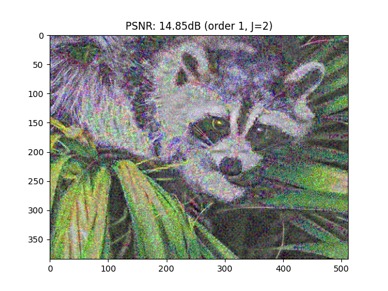

Note
Click here to download the full example code
Inverting scattering via mse¶
This script aims to quantify the information loss for natural images by performing a reconstruction of an image from its scattering coefficients via a L2-norm minimization.
Imports¶
import matplotlib.pyplot as plt
import numpy as np
import torch
import torch.nn.functional as F
from PIL import Image
from torch import optim
from scipy.misc import face
from kymatio.torch import Scattering2D
device = "cuda" if torch.cuda.is_available() else "cpu"
Load test image¶
src_img = Image.fromarray(face())
src_img = src_img.resize((512, 384), Image.ANTIALIAS)
src_img = np.array(src_img).astype(np.float32)
src_img = src_img / 255.0
plt.imshow(src_img)
plt.title("Original image")
src_img = np.moveaxis(src_img, -1, 0) # HWC to CHW
max_iter = 15 # number of steps for the GD
print("Image shape: ", src_img.shape)
channels, height, width = src_img.shape
/home/runner/work/kymatio/kymatio/examples/2d/plot_invert_scattering_torch.py:28: DeprecationWarning: ANTIALIAS is deprecated and will be removed in Pillow 10 (2023-07-01). Use Resampling.LANCZOS instead.
src_img = src_img.resize((512, 384), Image.ANTIALIAS)
Image shape: (3, 384, 512)
Main loop¶
for order in [1]:
for J in [2, 4]:
# Compute scattering coefficients
scattering = Scattering2D(J=J, shape=(height, width), max_order=order)
if device == "cuda":
scattering = scattering.cuda()
max_iter = 500
src_img_tensor = torch.from_numpy(src_img).to(device).contiguous()
scattering_coefficients = scattering(src_img_tensor)
# Create trainable input image
input_tensor = torch.rand(src_img.shape, requires_grad=True, device=device)
# Optimizer hyperparams
optimizer = optim.Adam([input_tensor], lr=1)
# Training
best_img = None
best_loss = float("inf")
for epoch in range(1, max_iter):
new_coefficients = scattering(input_tensor)
loss = F.mse_loss(input=new_coefficients, target=scattering_coefficients)
print("Epoch {}, loss: {}".format(epoch, loss.item()), end="\r")
optimizer.zero_grad()
loss.backward()
optimizer.step()
if loss < best_loss:
best_loss = loss.detach().cpu().item()
best_img = input_tensor.detach().cpu().numpy()
best_img = np.clip(best_img, 0.0, 1.0)
# PSNR
mse = np.mean((src_img - best_img) ** 2)
psnr = 20 * np.log10(1.0 / np.sqrt(mse))
print("\nPSNR: {:.2f}dB for order {} and J={}".format(psnr, order, J))
# Plot
plt.figure()
plt.imshow(np.moveaxis(best_img, 0, -1))
plt.title("PSNR: {:.2f}dB (order {}, J={})".format(psnr, order, J))
plt.show()
- 

Epoch 1, loss: 0.004395806696265936
Epoch 2, loss: 0.010747981257736683
Epoch 3, loss: 0.0029847484547644854
Epoch 4, loss: 0.002685928950086236
Epoch 5, loss: 0.004441110882908106
Epoch 6, loss: 0.0030704180244356394
Epoch 7, loss: 0.0015076962299644947
Epoch 8, loss: 0.0015746791614219546
Epoch 9, loss: 0.0020367270335555077
Epoch 10, loss: 0.001731803989969194
Epoch 11, loss: 0.0011120557319372892
Epoch 12, loss: 0.0009237747872248292
Epoch 13, loss: 0.0010906597599387169
Epoch 14, loss: 0.0011006807908415794
PSNR: 14.85dB for order 1 and J=2
Epoch 1, loss: 0.0018843415891751647
Epoch 2, loss: 0.0028222508262842894
Epoch 3, loss: 0.0010740647558122873
Epoch 4, loss: 0.0007734951213933527
Epoch 5, loss: 0.0010741836158558726
Epoch 6, loss: 0.0008093100623227656
Epoch 7, loss: 0.00048384207184426486
Epoch 8, loss: 0.00044804130448028445
Epoch 9, loss: 0.0004951524315401912
Epoch 10, loss: 0.0004230768245179206
Epoch 11, loss: 0.00030509373755194247
Epoch 12, loss: 0.00026347331004217267
Epoch 13, loss: 0.00027792336186394095
Epoch 14, loss: 0.00026439508656039834
PSNR: 14.97dB for order 1 and J=4
Total running time of the script: ( 1 minutes 14.631 seconds)